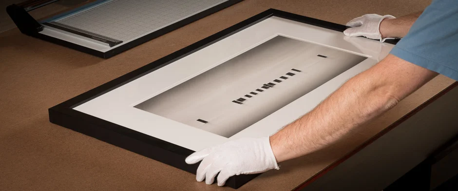

Print Studio
To meet the highest standards in his personal work, Jeff set up a state-of-the-art digital print studio dedicated exclusively to black & white fine art printing. The studio uses the finest equipment and materials available to produce superior results in craftsmanship and archival longevity.
Jeff uses Piezography, a system which replaces the standard inks in an Epson printer with up to seven individual shades of monochromatic ink. The Piezography system also forgoes the Epson printer driver, instead utilizing a specialized software RIP and custom profiles which control the output of each individual shade of ink.
Printing black & white on a color printer presents compromises. Piezography K7 utilizes seven individual shades of black ink compared to three used in Epson’s ABW (Advanced Black & White) mode. The result is a smoother tonal range, greater detail, and superior print longevity.
In 2011, Jeff began offering his expertise in printing to other photographers who demand the best in digital black & white reproductions. Jeff works closely with each client to offer a fully customized solution that suits each individual’s aesthetic requirements.
For further details on Jeff’s printing services, visit Jeff Gaydash Studios.